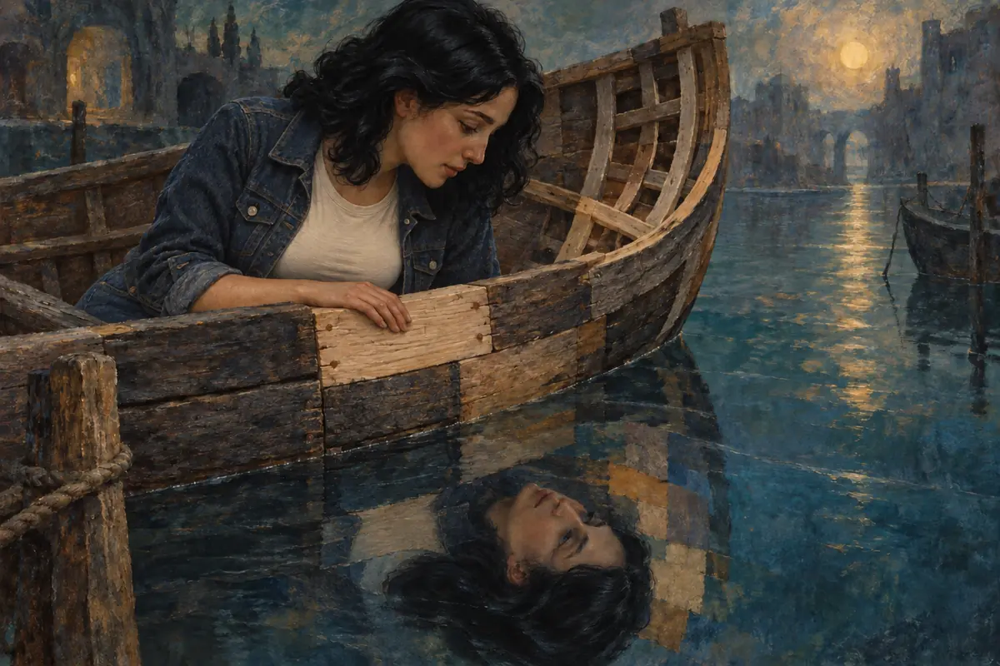

Are we still ourselves, after replacing all these pieces?

Image info
Rereading an old conversation can be a surprisingly uncomfortable experience. Sometimes all it takes is stumbling across a message from five years ago to wonder: did I really write that?
The person who wrote that message had our name and was convinced they were right. Today we'd tell them: “Look, I don't think you've understood any of this.”
Yet that person was us.
If we think and react differently today, what still makes us the same person?
A maintenance problem that became philosophy
The Ship of Theseus paradox begins with something very practical: wood deteriorates.
In chapter 23 of his Life of Theseus[1], Plutarch tells us that the Athenians preserved the ship on which the hero had returned from his voyage, gradually replacing worn timbers with new ones. That ongoing maintenance fuelled a debate: was it still the same ship, or had it become something else?
Imagine carrying on until everything has been replaced. Not a single original plank, not one old piece of timber left in place. During the work, nobody ever exclaimed: “There, now we have a new ship.” Each individual job seemed like an ordinary repair. Yet by the end, all the original material has disappeared.
Where do we draw the line? At the first plank? Halfway through? At the last one?
It sounds like the perfect philosophical question to keep an evening with friends going, until we realise that we've spent our lives doing maintenance on ourselves, too.
The planks we replace without noticing
At twenty, we're convinced that living a certain way is essential. At thirty, we wonder how we ever put up with it. Someone who once seemed irreplaceable becomes a stranger we know nothing about; a job that was supposed to define us starts to feel too tight. Even the things we want when nobody is watching begin to change.
The trouble is that we rarely see the bigger picture while all this is happening. We're getting through a difficult week, meeting someone new, trying to sleep better, or learning to say a “no” we couldn't bring ourselves to say before.
One plank at a time.
Then we meet an old friend and hear that sentence: “You're not who you used to be.”
It can sound like a reproach, a simple observation, even a relief. Either way, it gets to us, because it calls into question something we care about: the belief that beneath all the changes, there's still a recognisable person.
And perhaps there really is. It's just much harder to describe that person than to recognise their signature.
The brain of Theseus
The leap from a ship's timbers to neurons seems enormous. Yet one question lands us in the same predicament: if we could replace our brain one piece at a time, what would happen to us?
That's what Salvatore Sanfilippo, a computer scientist, Giorgio Gilestro, a neurobiologist, and Enrico Mensa, a university researcher specialising in artificial intelligence, discuss in a conversation on ZIP[2]. The discussion moves from brains to machines and ends up touching something very personal: what would have to carry on existing for us to say “I'm still me”?
Imagine replacing one neuron with an artificial component capable of performing the same functions. Then another, then another. We keep talking, remember the same holidays, recognise the people we love. From the outside, everything seems fine. But from the inside? Would there still be someone experiencing those memories, or would we have preserved only the behaviour?
It's a thought experiment, and the answer remains open. But it confronts us with an interesting difficulty: we usually take our body, what we do and what we feel together. Here we're forced to ask how much they depend on one another.
We don't have to wait for an artificial brain to feel that doubt close to home. Just think how much an experience can change us. After a disappointment, we trust differently. A responsibility that once seemed unbearable becomes part of our days. A belief we'd have argued about for hours eventually stops convincing us.
Changing your mind isn't the same as replacing a neuron. But it brings us back to the feeling we started with, in front of an old chat: we remember perfectly well being that person, yet today we struggle to feel at home in their thoughts.
Perhaps we're asking two different things
When we say “I'm still the same person”, we can mean at least two things.
The first is that our life has continuity: we're the person who lived those experiences, made those decisions and built those relationships. Even the mistakes that embarrass us today belong to our story.
The second is that we've kept the same character, the same desires and the same beliefs.
We often recognise ourselves in the first statement but have plenty of doubts about the second. And that distinction helps untangle a few things.
We can have changed profoundly and still answer for an old promise. We can take responsibility for hurt we caused in the past, even if we'd act differently today. Saying “that was me” doesn't oblige us to want to go back to being that person.
Likewise, someone who knew us ten years ago can remember us fondly without having the final say on who we should be now.
There's a particular strain in growing while other people watch: sometimes they keep calling us by the name of a part we've already replaced.
Which pieces are we changing, and why?
The Ship of Theseus becomes useful when we stop looking for a definitive answer for a moment and focus on one particular change.
Take a recent decision. Are we abandoning a project because it no longer interests us, or because we're afraid of failing? Have we learned to be more generous with our time, or have we started saying yes to everything again to keep the peace? Is a relationship helping us discover something new about ourselves, or asking us to smooth ourselves down until we can no longer recognise ourselves?
From the outside, two transformations can look identical. Lived from within, they can mean very different things.
Even not changing deserves a few questions. A habit kept for twenty years can be a happy choice, but it can also conceal a fear that we've gradually given the name “character”.
That's why “that's just how I am” sometimes describes us, but at other times shuts a door in our face.
There's no inventory of “authentic parts” we must preserve at all costs. But we can try to recognise what we're protecting, what we're giving up, and how involved we feel in what's happening to us.
The original version
We keep photographs, old messages, objects. They help us remember who we've been. The risk comes when we start treating them as evidence of an “original version” we should remain faithful to forever.
But which version would that be, exactly?
The one before we left? Before we fell in love? Before a loss? Before we realised that a belief we held was hurting us?
Each of those versions of us could claim to be “the real one”. Each would have memories on its side and something important to lose.
Perhaps being ourselves also involves this difficult work: recognising who we've been without having to ask their permission for every step we take next.
The Athenians preserved Theseus's ship. We have to sail in ours.
And when a plank starts to give way, the question becomes much less abstract: do we hold on to it because it belongs to us, or replace it because we want to keep sailing?
Sources & references
- Plutarch, Life of Theseus (perseus.tufts.edu)
- Conversation on ZIP (youtube.com)